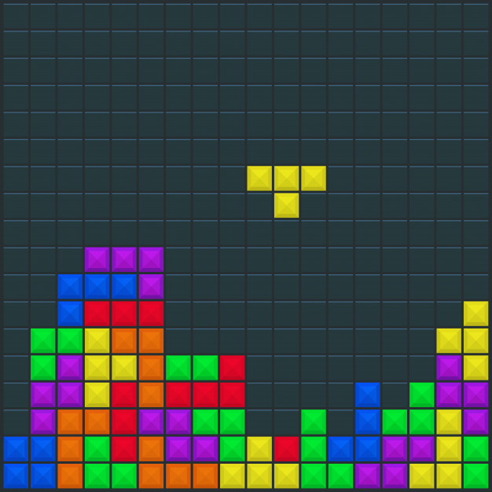
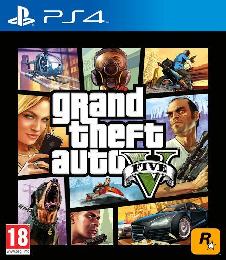
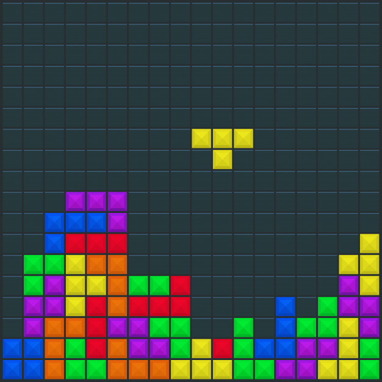
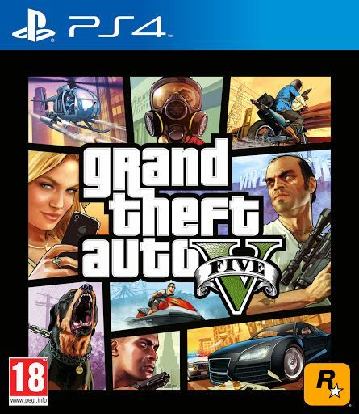
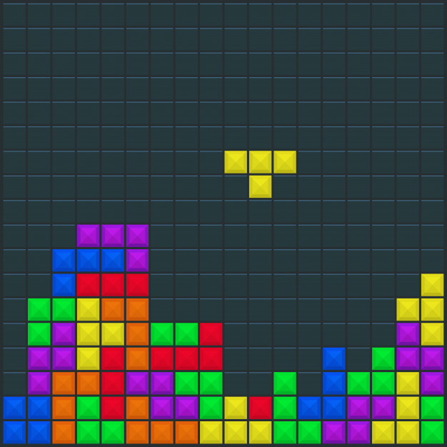
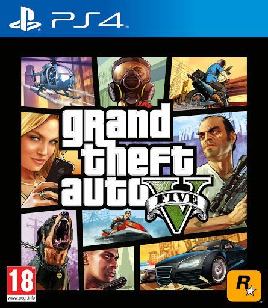
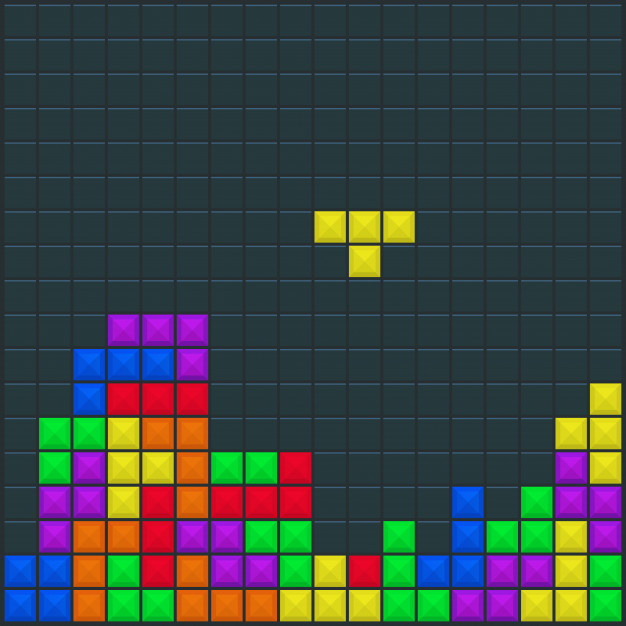
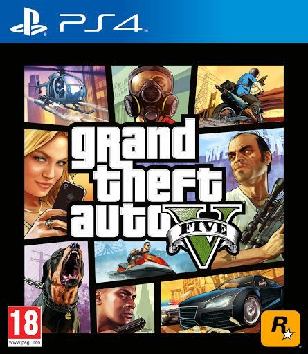

") 



 



Minecraft est un jeu vidéo de type « bac à sable » (construction complètement libre) développé par le Suédois Markus Persson, alias Notch, puis par le studio de développement Mojang. Il s'agit d'un univers composé de voxels et généré aléatoirement, qui intègre un système d'artisanat axé sur l'exploitation puis la transformation de ressources naturelles (minéralogiques, fossiles, animales et végétales).
Tetris est un jeu vidéo de puzzle conçu par Alekseï Pajitnov à partir de juin 1984 sur Elektronika 60. Lors de la création du concept, Pajitnov est aidé de Dmitri Pavlovski et Vadim Guerassimov pour le développement. Le jeu est édité par plusieurs sociétés au cours du temps, à la suite d'une guerre pour l'appropriation des droits à la fin des années 1980.
Grand Theft Auto V (plus communément abrégé GTA V) est un jeu vidéo d'action-aventure, développé par Rockstar North et édité par Rockstar Games en 2013. Faisant partie de la série vidéoludique série des jeux vidéo Grand Theft Auto, il est une suite de l'univers fictif introduit dans Grand Theft Auto IV, sorti en 2008.
Wii Sports (Wii スポーツ, Wii Supōtsu?) est un jeu vidéo de sport développé et édité par Nintendo comme titre de lancement pour la console de jeux vidéo Wii. Il est commercialisé dans un premier temps en Amérique du Nord le 19 novembre 2006, et sort le mois suivant au Japon, en Australie et en Europe.
Designed by Youenn PIERRE-JUSTIN.